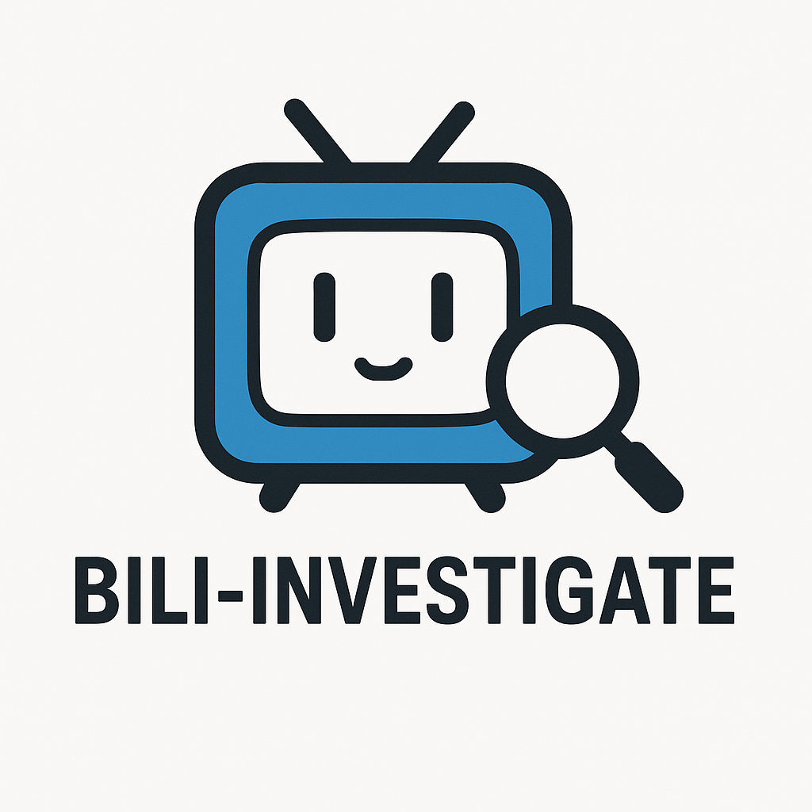
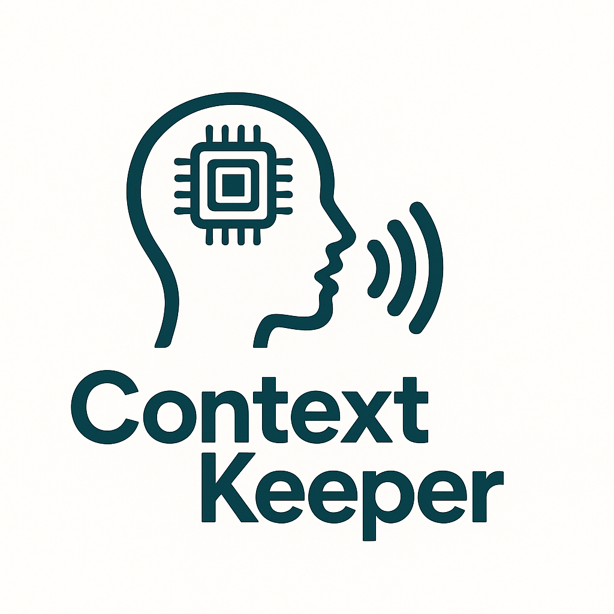
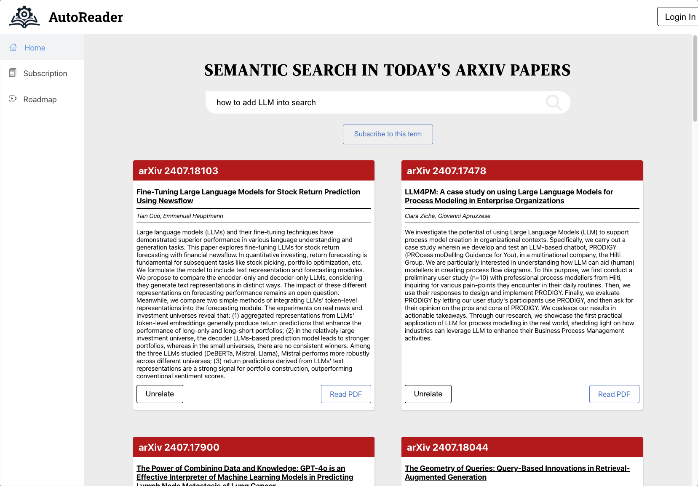
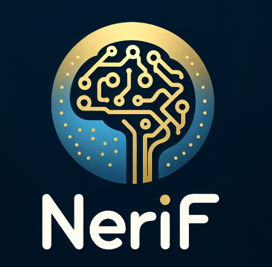
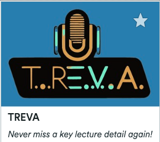
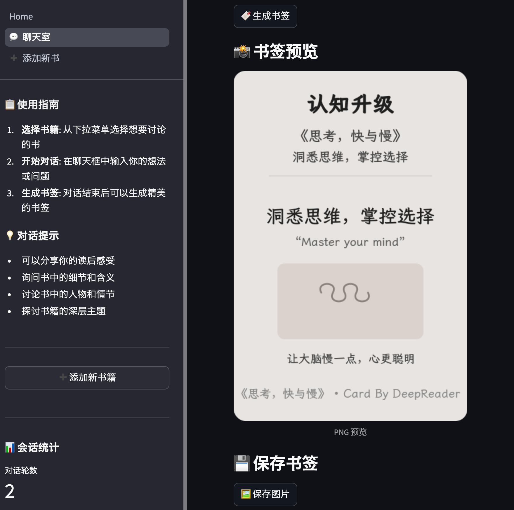
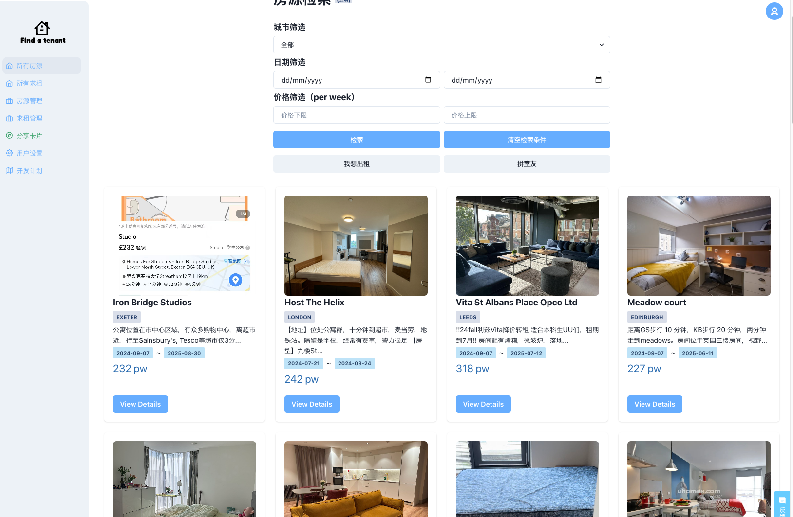

项目
BTMR-Paper
Insanely Fast Paper Reading Tool - An AI-powered web application for extracting, analyzing, and summarizing academic papers

Bili-Investigate
A Streamlit-based web application for tracking Bilibili content creators' video updates with smart incremental fetching
YA-PapersWithCode
Yet Another Papers With Code - A modern recreation of the Papers With Code platform with AI-powered semantic search

ContextKeeper
AI assistant for RTX GPU users with extensible plugin ecosystem - A community fork of NVIDIA G-Assist



TREVA
Never Miss Your Lecture Again. From the 2023 HacktheBurgh Hackathon, this project aims to convert lecture recordings into understandable and readable notes.


Find-A-Tenant
AI rental agent, helps you find a house based on fuzzy needs. With AI Fuzzy Search Agent, Automatic Metadata Extraction Agent, and more.